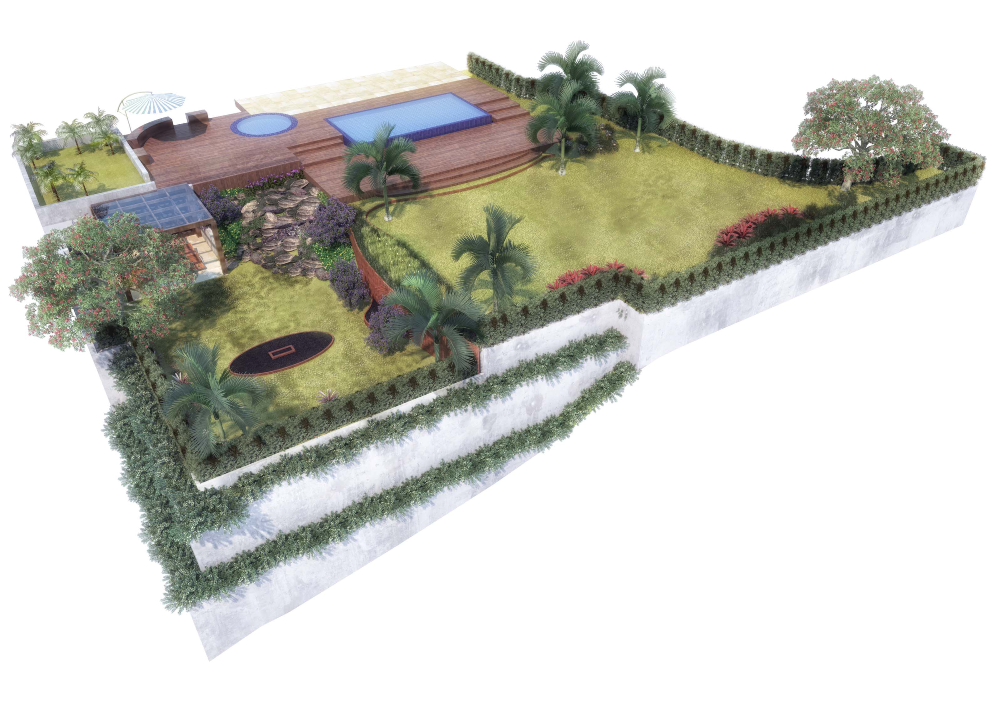

Prefeitura de Iperó anuncia obras de revitalização na Praça Padre Roberto
Na manhã desta terça-feira, o governo municipal anunciou o início do projeto de modernização do centro da cidade. As obras incluem nova iluminação em LED, playground para as crianças, troca do calçamento e acessibilidade aprimorada. A previsão de entrega é para o próximo semestre.
